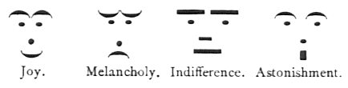

Emoticonos
El Diccionario de la lengua española define emoticono como la "representación de una expresión facial que se utiliza en mensajes electrónicos para aludir al estado de ánimo del remitente".
Pero antes de aparecer en mensajes electrónicos, los emoticonos ya habían aparecido en los medios tradicionales. Por ejemplo, ya en 1881 la revista satírica estadounidense Puck publicó cuatro rostros creados con símbolos tipográficos:

La primera persona que propuso usar los emoticonos :-) y :-( para indicar que el texto debía interpretarse como una broma o un chiste (o no) en medios electrónicos fue el informático Scott Fahlman, el 19 de septiembre de 1982, en un mensaje que se consiguió recuperar hace unos años:
19-Sep-82 11:44 Scott E Fahlman :-)
From: Scott E Fahlman <Fahlman at Cmu-20c>
I propose that the following character sequence for joke markers:
:-)
Read it sideways. Actually, it is probably more economical to mark
things that are NOT jokes, given current trends. For this, use
:-(
 Las versiones gráficas de esas expresiones se remontan a principios del siglo XX, pero el smiley, la carita sonriente que desde entonces forma parte de la cultura popular, fue creada por el dibujante Harvey Ross Ball en 1963 para una empresa de seguros que quería utilizar la imagen para motivar a sus empleados.
Las versiones gráficas de esas expresiones se remontan a principios del siglo XX, pero el smiley, la carita sonriente que desde entonces forma parte de la cultura popular, fue creada por el dibujante Harvey Ross Ball en 1963 para una empresa de seguros que quería utilizar la imagen para motivar a sus empleados.
El uso de los emoticonos no ha hecho más que aumentar con el tiempo, hasta el punto de haberse incluido ya en los juegos de caracteres como un carácter más: por ejemplo, el smiley sonriente XXX tiene el código Unicode U+263A y se puede incluir en una página web escribiendo la entidad de carácter XXX; y el smiley ceñudo XXX tiene el código Unicode U+2639.
El siguiente paso en la evolución de los emoticonos han sido los emoji, palabra japonesa que significa pictograma. Los emoji se popularizaron en Japón a finales de los 90. Desde 2010 se están incluyendo en Unicode muchos emoji como estos:


Para bien o para mal, los emoji ya forman parte de la comunicación. Como muestra de ello, en el año 2015 la editorial Oxford University Press eligió como palabra del año el emoji U+1F602, la cara con lágrimas de alegría:
Basado en información de la Wikipedia
Última modificación: 4 de noviembre de 2016